<html>
<head>
    <script src="//ajax.googleapis.com/ajax/libs/angularjs/1.2.23/angular.min.js"></script>
    <script src="//ajax.googleapis.com/ajax/libs/jquery/1.11.1/jquery.min.js"></script>
    <style>
    .fan-holder {
        position: relative;
        display: inline-block;
    }

    .pole, .blades {
      width: 100%;
      height: auto;
    }

    .blades {
        position: absolute;
    }

    .spinny {
      -webkit-animation-name: spin;
      -webkit-animation-duration: 2000ms;
      -webkit-animation-iteration-count: infinite;
      -webkit-animation-timing-function: linear;
      -moz-animation-name: spin;
      -moz-animation-duration: 2000ms;
      -moz-animation-iteration-count: infinite;
      -moz-animation-timing-function: linear;
      -ms-animation-name: spin;
      -ms-animation-duration: 2000ms;
      -ms-animation-iteration-count: infinite;
      -ms-animation-timing-function: linear;
      
      animation-name: spin;
      animation-duration: 2000ms;
      animation-iteration-count: infinite;
      animation-timing-function: linear;
    }

    @-ms-keyframes spin {
        from { -ms-transform: rotate(0deg); }
        to { -ms-transform: rotate(360deg); }
    }
    @-moz-keyframes spin {
        from { -moz-transform: rotate(0deg); }
        to { -moz-transform: rotate(360deg); }
    }
    @-webkit-keyframes spin {
        from { -webkit-transform: rotate(0deg); }
        to { -webkit-transform: rotate(360deg); }
    }
    @keyframes spin {
        from {
            transform:rotate(0deg);
        }
        to {
            transform:rotate(360deg);
        }
    }
    </style>
</head>
<body ng-app="test" style="background:#26ADEE;">
  <div ng-controller="fanController">
    <span ng-repeat="fan in fans">
      <span spinning-fan></span>
    </span>
  </div> 
<script>
angular.module('test', [])
  .controller('fanController', ['$scope', function($scope) {
    
    $scope.fans = [];
    var widths = [250, 200, 150];

    for (var i = 0; i < widths.length; i++) {
      $scope.fans.push({
        width: widths[i]
      });
    }
  }])
  .directive('spinningFan', function() {
    return {
      template: '<div class="fan-holder" style="width:{{fan.width}}px;">'+
                  ''+
                  ''+
                '</div>',
      link: function(scope, element, attrs) {

        var $blades = jQuery(element).find('.blades');
        var timeToStart = scope.fan.width * 10;

        setTimeout(function(){
          $blades.toggleClass('spinny');
        }, timeToStart);
      }
    };
  });
</script>   
</body>
</html>